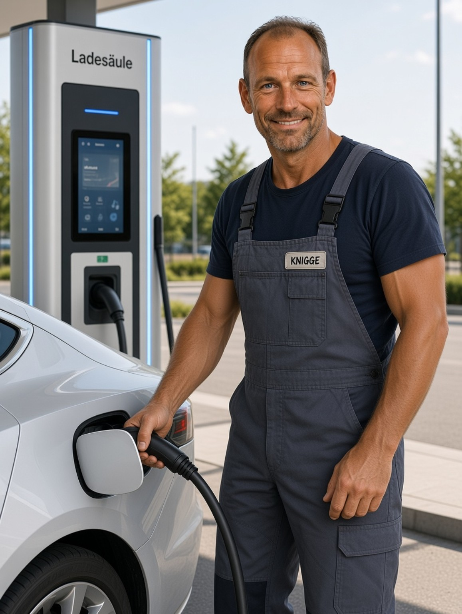

Nach 5–6 Jahren aufmerksam werden
Der ADAC nennt im Durchschnitt etwa fünf bis sechs Jahre. Je nach Fahrzeug, Klima, Nutzung und Pflege kann eine Batterie deutlich länger oder auch wesentlich kürzer halten.
„Die Batterie kündigt ihren Abschied oft an – nur leider nicht immer. Wer morgens nicht erst auf den Pannendienst warten möchte, sollte den kleinen Stromspeicher rechtzeitig im Blick haben.“
Bei einer Panne denken viele zuerst an Motor, Lichtmaschine oder Elektronik. Die Statistik spricht eine andere Sprache: Die 12-Volt-Batterie ist die häufigste Ursache für Pannen. Sie altert als Verschleißteil, wird durch Kurzstrecken und lange Standzeiten belastet und verliert bei Kälte einen Teil ihrer Leistungsfähigkeit.
2025 entfielen laut ADAC 45,4 Prozent der Pannen auf eine leere oder defekte Batterie. Damit ist die Batterie weiterhin mit großem Abstand die häufigste Pannenursache.
Auch bei Elektroautos ist die 12-Volt-Batterie relevant: Sie versorgt das Bordnetz und viele Steuergeräte. Die Hochvoltbatterie ist etwas anderes und nicht mit der Starterbatterie gleichzusetzen.
Es gibt kein starres Ablaufdatum – Alter und Zustand liefern aber wichtige Hinweise.
Der ADAC nennt im Durchschnitt etwa fünf bis sechs Jahre. Je nach Fahrzeug, Klima, Nutzung und Pflege kann eine Batterie deutlich länger oder auch wesentlich kürzer halten.
Kälte verschlechtert die verfügbare Startleistung. Eine bereits geschwächte Batterie fällt deshalb häufig bei den ersten kalten Tagen auf.
Ein auffällig langsames Durchdrehen des Anlassers, Klackern beim Startversuch oder Spannungseinbruch sind Warnzeichen – besonders wenn sie wiederholt auftreten.
Flackernde Beleuchtung, Fehlermeldungen, zurückgesetzte Einstellungen oder Komfortfunktionen, die nach dem Start auffällig reagieren, können mit einer schwachen 12-V-Versorgung zusammenhängen.
Starten verbraucht viel Energie. Wer überwiegend kurze Strecken fährt, gibt der Lichtmaschine oft nicht genug Zeit zum Nachladen. Regelmäßiges Nachladen kann die Batterie schonen.
Auch abgestellte Fahrzeuge verbrauchen Strom. Alarmanlage, Steuergeräte und Komfortsysteme können die Batterie über Wochen entladen – eine schwache Batterie nimmt Tiefentladungen besonders übel.
Nicht einfach nach „Ah“ kaufen: Typ, Größe, Leistung und Fahrzeugtechnik müssen zusammenpassen.
| Batterietyp | Typische Eigenschaften | Wichtig |
|---|---|---|
| Standard-Blei-Säure | Bewährter, vergleichsweise günstiger Nassakku für viele Fahrzeuge ohne Start-Stopp. | Nicht für jedes moderne Fahrzeug mit hohem Energiebedarf geeignet. |
| EFB | „Enhanced Flooded Battery“ – robuster als eine Standardbatterie und für viele Start-Stopp-Systeme ausgelegt. | Bei Fahrzeugen mit EFB sollte wieder eine geeignete EFB oder eine vom Hersteller freigegebene Alternative verwendet werden. |
| AGM | „Absorbent Glass Mat“ – Elektrolyt ist im Glasvlies gebunden. Hohe Zyklenfestigkeit und gute Leistung bei vielen elektrischen Verbrauchern. | Bei Fahrzeugen, die ab Werk AGM verlangen, sollte wieder AGM verwendet werden. Ein Batteriewechsel kann anschließend eine Registrierung/Anlernung erfordern. |
| Lithium-Ionen | Sehr leicht und hohe Zyklenfestigkeit; vor allem bei speziellen Fahrzeugen bzw. als besondere Starterlösung. | Nicht einfach gegen eine Blei-Batterie austauschen. Fahrzeug- und Ladeelektronik müssen dafür geeignet sein. |
Start-Stopp-Systeme starten den Motor wesentlich häufiger als ein klassisches Fahrzeug. Deshalb kommen dafür in der Regel EFB- oder AGM-Batterien zum Einsatz. Eine einfache Standardbatterie kann zwar zunächst funktionieren, ist aber für diese Belastung nicht ausgelegt und kann schneller verschleißen. Bei AGM-Fahrzeugen sollte nicht einfach auf EFB zurückgerüstet werden.
Die Baugröße muss genauso passen wie elektrische Werte und Anschlüsse.
Bei Starterbatterien werden häufig Baugrößen wie L1 bis L5 verwendet. Dabei geht es vereinfacht um die Gehäuselänge. Verbreitete Größen liegen beispielsweise bei etwa 207, 242, 278, 315 oder 353 mm Länge, häufig bei rund 175 mm Breite und 190 mm Höhe. Es gibt jedoch zahlreiche Varianten und abweichende Gehäusehöhen.
Wichtig: Vor dem Kauf immer die alte Batterie bzw. die Fahrzeugdaten vergleichen. Entscheidend sind unter anderem Gehäuseabmessungen, Befestigung, Polanordnung, Anschlussgröße und Entgasung.
| Angabe | Was sie bedeutet | Darauf achten |
|---|---|---|
| Ah | Kapazität der Batterie, also vereinfacht die gespeicherte elektrische Ladungsmenge. | Eine höhere Ah-Zahl ist nicht automatisch besser. Sie muss zum Fahrzeug und Batteriemanagement passen. |
| A (EN) | Kaltstartstrom nach der entsprechenden Prüfnorm. Er beschreibt, wie viel Startstrom die Batterie unter definierten Bedingungen liefern kann. | Bei modernen Dieseln und Fahrzeugen mit hoher Startlast ist ein ausreichender Kaltstartstrom besonders wichtig. |
| L1–L5 / Bauform | Gibt einen Hinweis auf die Gehäusegröße. | Die Batterie muss in Halterung und Batteriekasten passen. |
| Polanordnung | Position von Plus- und Minuspol sowie Anschlussart. | Falsche Polanordnung kann dazu führen, dass Kabel nicht reichen oder falsch liegen. |
Bei vielen Fahrzeugen reicht „alte raus, neue rein“ nicht mehr.
Viele moderne Fahrzeuge überwachen die Batterie über ein Batteriemanagementsystem. Nach dem Einbau muss die neue Batterie je nach Fahrzeug registriert oder codiert werden. Dabei können Typ und Kapazität hinterlegt werden. Ohne diese Anpassung kann das Ladesystem die neue Batterie unter Umständen nicht optimal behandeln.
Moderne Fahrzeuge regeln Ladespannung und Ladestrom abhängig von Batteriezustand, Temperatur und Verbrauch. Deshalb sollte eine Ersatzbatterie hinsichtlich Typ, Kapazität und Technologie den Herstellervorgaben entsprechen.
Bei einfachen älteren Fahrzeugen ist der Wechsel vergleichsweise unkompliziert. Bei modernen Autos können Speichererhaltung, Batteriemanagement, elektrische Heckklappe, Alarmanlage oder andere Systeme berücksichtigt werden müssen.
Auch ein reines Elektroauto besitzt in der Regel ein 12-Volt-Bordnetz. Die 12-V-Batterie versorgt Steuergeräte und elektrische Verbraucher und ermöglicht je nach Fahrzeug die Aktivierung des Hochvoltsystems. Eine leere 12-V-Batterie kann daher auch ein E-Auto lahmlegen.
Eine Spannungsmessung ist hilfreich – aber kein vollständiger Batterietest.
Eine Messung nach ausreichender Ruhezeit kann Hinweise auf den Ladezustand geben. Eine einzelne Spannungsmessung sagt jedoch nicht zuverlässig, wie viel Startleistung die gealterte Batterie noch besitzt.
Ein deutlicher Einbruch beim Startvorgang kann auf eine schwache Batterie hindeuten. Für eine belastbare Beurteilung ist ein professioneller Batterietest besser.
Werkstätten können je nach Batterietyp mit geeigneten Testgeräten unter anderem Ladezustand und Kaltstartfähigkeit bewerten.
Bei Kurzstrecken, längeren Standzeiten oder saisonal genutzten Fahrzeugen kann ein geeignetes Ladegerät helfen, den Ladezustand zu stabilisieren.
Die Batterie mag weder ständige Unterladung noch extreme Hitze.
Bei vielen Kurzstrecken kann gelegentliches Nachladen mit einem geeigneten Ladegerät sinnvoll sein. Das ist besonders bei Fahrzeugen mit hohem Ruhestrom hilfreich.
Hohe Temperaturen beschleunigen die Alterung einer Starterbatterie. Der eigentliche Verschleiß kann im Sommer entstehen und sich erst im folgenden Winter bemerkbar machen.
Korrosion an den Polen und schlechte elektrische Verbindungen können die Funktion beeinträchtigen. Bei sichtbarer Korrosion sollte die Ursache fachgerecht geprüft werden.
Wer fast ausschließlich wenige Kilometer fährt, sollte dem Fahrzeug regelmäßig eine längere Fahrt gönnen oder – sofern vorgesehen – ein Erhaltungsladegerät verwenden.
Eine tiefentladene Batterie kann dauerhaft Schaden nehmen. Licht, Innenraumverbraucher und lange Standzeiten sollten deshalb nicht unterschätzt werden.
Ist eine Batterie ungewöhnlich schnell leer, muss nicht die Batterie selbst schuld sein. Ein stiller Verbraucher oder ein elektrisches Problem kann dahinterstecken.
Beim E-Auto denken viele beim Begriff „Batterie“ an den großen Hochvoltspeicher. Für eine Panne ist aber häufig die kleine 12-Volt-Batterie entscheidend. Sie versorgt das Bordnetz und ermöglicht je nach Fahrzeug erst das Aufwecken und Zuschalten weiterer Systeme. Deshalb sollte auch bei einem E-Auto der Zustand der 12-V-Batterie nicht vernachlässigt werden.
